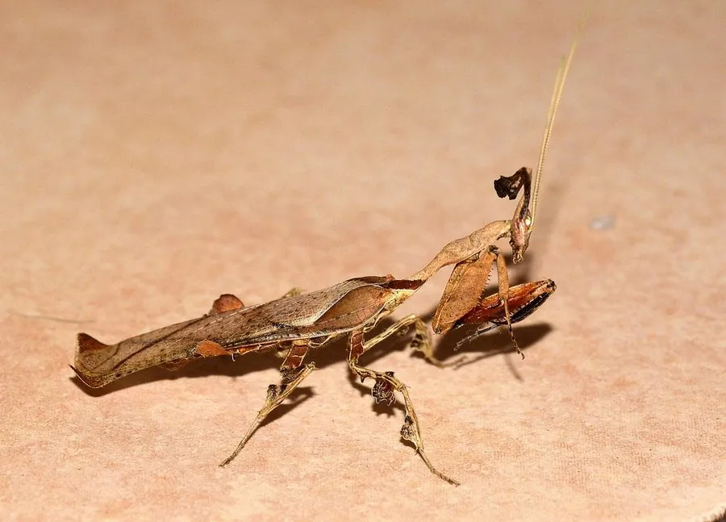

昆虫 · 动物界
幽灵螳 Phyllocrania paradoxa

体色灰褐、头顶生有奇特角突的小型螳螂，外形像一片卷曲的枯叶，静止时几乎无法被察觉，是热门的宠物螳螂。
- 分类
- 门节肢动物门纲昆虫纲目螳螂目科花螳科属幽灵螳属
- 栖息环境
- 非洲东部的稀树草原和灌丛，生活在低矮枝叶间
- 地理分布
- 非洲东部和南部
- 保护级别
- 暂无评估
物种志
幽灵螳成虫体长约 40–50 mm，雌虫略大于雄虫。体色灰褐至深褐，表面粗糙，头部顶端有一个向前上方伸出的角状突起，前胸背板两侧有叶状扩展，腹部宽扁并带有叶脉状的脊纹，整体极像一片干枯卷曲的叶子。
幽灵螳分布于非洲东部和南部的稀树草原与灌丛，生活在低矮的枝叶间。它靠拟态躲避天敌，也靠拟态伏击猎物：平时几乎不动，随风轻轻摆动身体，等苍蝇、蛾子等猎物靠近才突然伸出前足。幽灵螳的体色会随蜕皮和环境湿度变化，从浅灰到深褐不等。雌虫把卵鞘固定在枝条上，若虫孵化后外形与成虫相似。它因奇特的外形和较低的饲养难度，成为昆虫爱好者中很受欢迎的种类，野生种群目前没有明显的威胁。
形态与习性
- 食性捕食苍蝇、蛾子等小型昆虫
- 体长40–50 mm，雌虫略大
- 拟态外形像卷曲的枯叶，头部有角状突起
- 体色随蜕皮和环境湿度变化，由浅灰到深褐
- 繁殖卵鞘固定在枝条上，若虫外形似成虫
- 饲养因外形奇特、饲养容易而广受欢迎
趣味知识
- 幽灵螳头顶的角状突起让它看起来像一片卷起的枯叶。
- 它平时几乎不动，只随风轻摆，等猎物靠近才突然出手。
- 幽灵螳的体色会随蜕皮和湿度改变，同一窝个体颜色也可能不同。